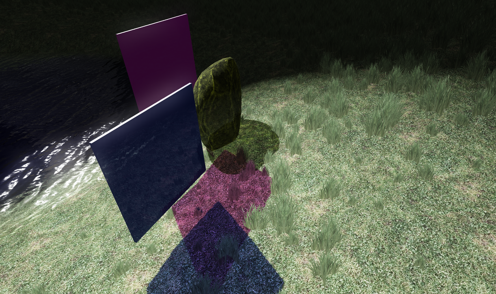
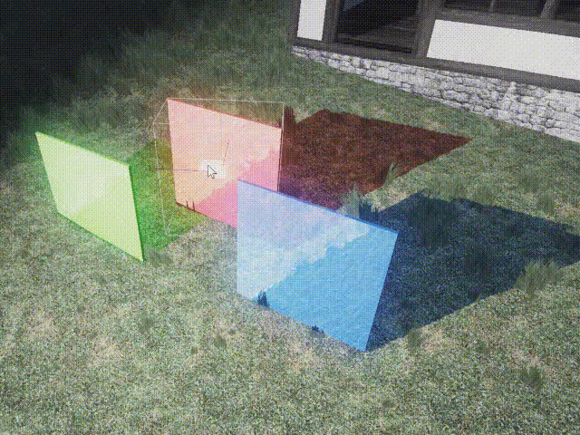
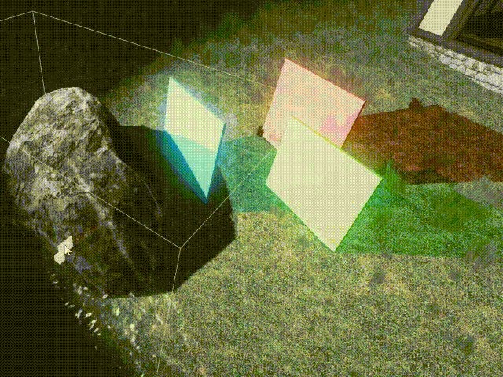
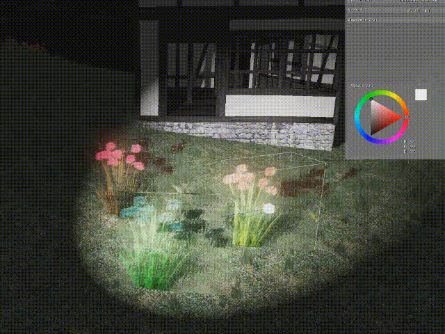
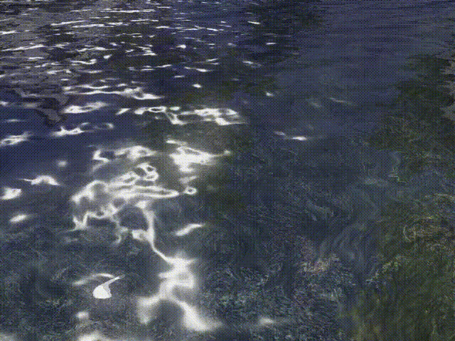

Easy Transparent Shadow Maps

Supporting transparencies with traditional shadow mapping is straight forward and allows for nice effects but as with anything related to rendering transparents with rasterization, there are corner cases.
Little sneak peak of what you can achieve with this:
The implementation is really simple once you have implemented shadow mapping for opaque objects. After the opaque shadow pass, we must render the transparents into a color buffer, but reject samples which would be occluded by opaques, so using a depth read-only depth stencil state. The transparents should be blended multiplicatively. Sorting does not matter with a multiply blend state. In bullet points:
- Render opaque objects into depth stencil texture from light’s point of view
- Bind render target for shadow color filter: R11G11B10 works good
- Clear render target to 1,1,1,0 (RGBA) color
- Apply depth stencil state with depth read, but no write
- Apply multiplicative blend state eg:
- SrcBlend = BLEND_ZERO
- DestBlend = BLEND_SRC_COLOR
- BlendOp = BLEND_OP_ADD
- Render transparents in arbitrary order
When reading shadow maps in shading passes, we only need to multiply the lighting value with the transparent shadow map color filter if the pixel is inside the light. There is a slight problem with this approach, that you will notice immediately. Transparent objects now receive their own colored self shadow too. The simplest fix is to just disable the colored part of the shadow calculation for transparent objects. We can already produce nice effects with this, this is not a huge price to pay.
See it in action, transparents are rendered without colored self-shadows:

But they receive shadows from opaque objects just fine:

There is a technique which would allow us to render colored shadows on top of transparents too. This involves keeping an additional shadow depth map for transparencies. The flow of this technique is like this (from a Blizzard presentation):
- Render opaque shadow map
- Render transparent shadow map
- To a separate depth texture!
- Depth writes ON
- Clear shadow color filter texture (like in the simple approach)
- Render transparent again to color filter render target
- But use the opaque shadow map’s depth stencil
- depth read ON
- depth write OFF
And in the shading step, now there will be two shadow map checks, one for the opaque, one for the transparent shadow maps. Only multiply the light with the shadow filter color texture when the transparent shadow check fails.
In my experience you can also have the transparent depth in the color texture’s alpha channel, to refine the results. (See UPDATE section at the end).
This will eliminate false self shadows from transparent objects. But unfortunately now when a transparent receives a colored shadow, its own transparent shadow color will also contribute to itself.
What’s more interesting, are the additional effects we can achieve with transparent shadow maps:
Textured shadows, which can be used as a projector for example, just put a transparent textured geometry in front of a light:

And underwater refraction caustics:

UPDATE: You can use the alpha channel of the transparent shadow map as a secondary depth buffer. This way, tinting volumetric light becomes possible because light between light and transparent object must be not tinted (rejected based on secondary depth). Since the multiplicative colors don’t care about alpha at all (however, the color is multiplied with alpha – 1 as a transparency factor), this is safe to use with a MAX blend operator (or MIN if you don’t use reversed Z):
SrcBlendAlpha = BLEND_ONE;
DestBlendAlpha = BLEND_ONE;
BlendOpAlpha = BLEND_OP_MAX;
Also use a texture format with alpha channel such as R16G16B16A16_FLOAT
The secondary depth buffer will support one layer of transparency (it should be the closest transparent layer to the light), so it’s not perfect, but things rarely are in real time rendering!
That’s it, I think this is a worthwhile technique to include in a game engine. This can be used for many interesting effects. Thank you for reading!
My transparent shadow map rendering pixel shader can be found here.
Related article:
StarCraft 2 Effects and techniques